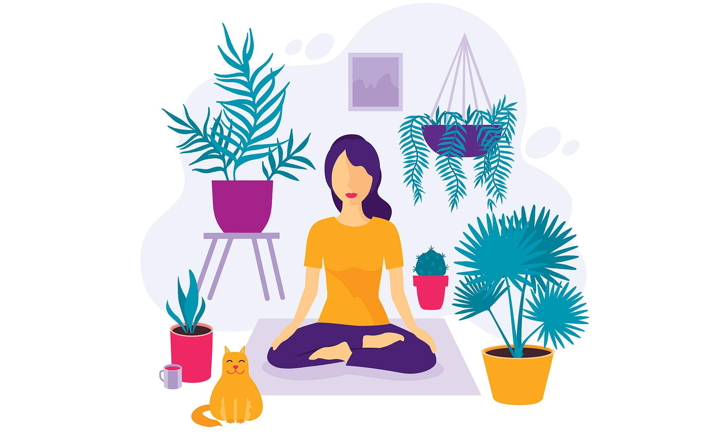
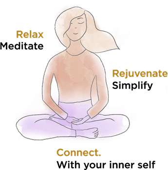
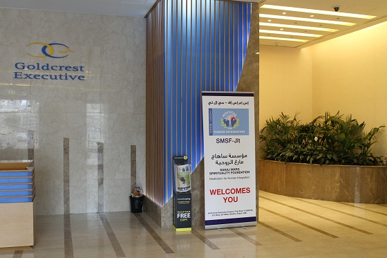
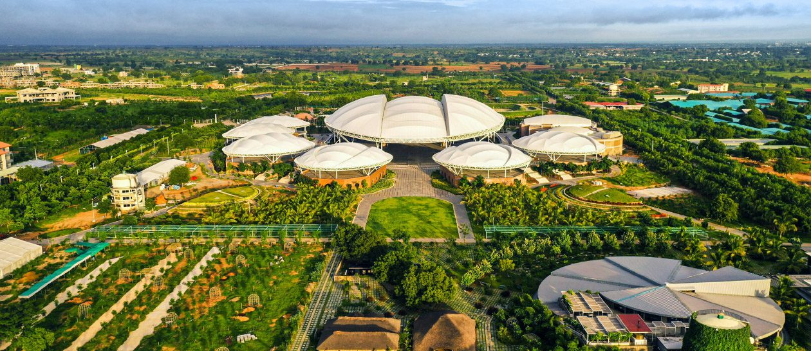

What is Heartfulness?
Heartfulness is a simple, heart-centered approach to meditation that helps you connect with your inner self, find peace, and cultivate compassion. It belongs to the broader Sahaj Marg tradition (Raja Yoga) taught via Shri Ram Chandra Mission (SRCM).

Daily Life Integration
Heartfulness is not confined to a meditation cushion or specific hours of the day; it is a way of life. By beginning the day with meditation, cleansing the mind in the evening, and ending with a prayerful connection, seekers weave stillness and clarity into the rhythm of their lives. Whether in moments of quiet reflection or in the midst of busy work and family responsibilities, Heartfulness offers tools to return to the heart and live with centered awareness. The practice adapts easily to the pace of modern life, making spirituality practical, natural, and deeply integrated.

Benefits
The benefits of Heartfulness meditation extend from personal well-being to measurable improvements in mental and emotional health. Practitioners often speak of experiencing calmness, clarity, and resilience in their daily lives, while scientific studies have suggested reductions in stress, improvements in focus, and greater overall balance. Beyond measurable outcomes, the practice brings a subtle transformation, helping individuals develop deeper compassion, stronger relationships, and an abiding sense of peace that permeates both personal and professional spheres.

Community in UAE / Dubai
Heartfulness has found a vibrant home in the UAE, with the Dubai Ashram serving as a hub for seekers from across the region. The ashram hosts daily group meditations, training sessions, and community activities that bring together hundreds of practitioners. Facilities include a large meditation hall, outdoor spaces for gatherings, a children’s corner, and a library, creating an inclusive environment for families and individuals alike. The community here reflects the diversity of Dubai itself, united in a shared aspiration to grow inwardly while supporting one another in the journey of the heart.
Heartfulness in Milan and Beyond
Heartfulness has spread to over 160 countries, with communities and meditation centers blossoming across continents. In cities like Milan and elsewhere in Europe, practitioners gather in homes, local centers, or online to meditate together and support each other. This global presence demonstrates the universality of the method, transcending culture, geography, and language. Wherever it takes root, the practice adapts to local life, while maintaining its simple essence of connecting with the heart, creating a worldwide network of seekers walking the same path.
Who is the Guide
The Heartfulness movement is guided by a lineage of teachers who have carried forward the tradition with devotion and simplicity. It began with Lalaji (Ram Chandra of Fatehgarh), continued with Babuji (Ram Chandra of Shahjahanpur), was nurtured by Chariji, and today is led by Kamlesh D. Patel, lovingly known as Daaji. The guides emphasize living spirituality in daily life rather than withdrawing from it, and through their inspiration, Heartfulness has blossomed into a global family. The central ashram at Kanha Shanti Vanam in Telangana, India, stands as a living symbol of this continuity and the source of inspiration for seekers around the world.

Kanha Shanti Vanam
Kanha Shanti Vanam, located in the serene countryside of Telangana, India, is the global headquarters and spiritual heart of the Heartfulness movement. Spread over hundreds of acres, Kanha is both a meditation retreat and a thriving eco-community, offering space for reflection, training, and large international gatherings. It is a place where seekers from all over the world come together to meditate with the guide, learn, and deepen their practice. Beyond meditation, Kanha embodies values of sustainability, service, and collective harmony, making it not just an ashram but a living vision of balanced living.